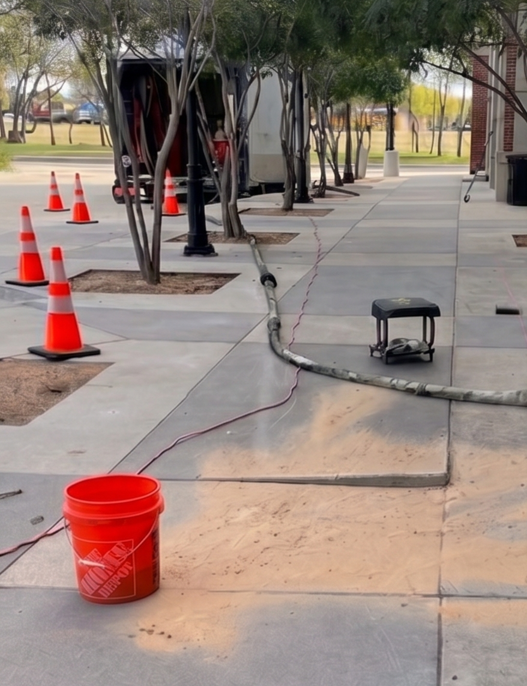
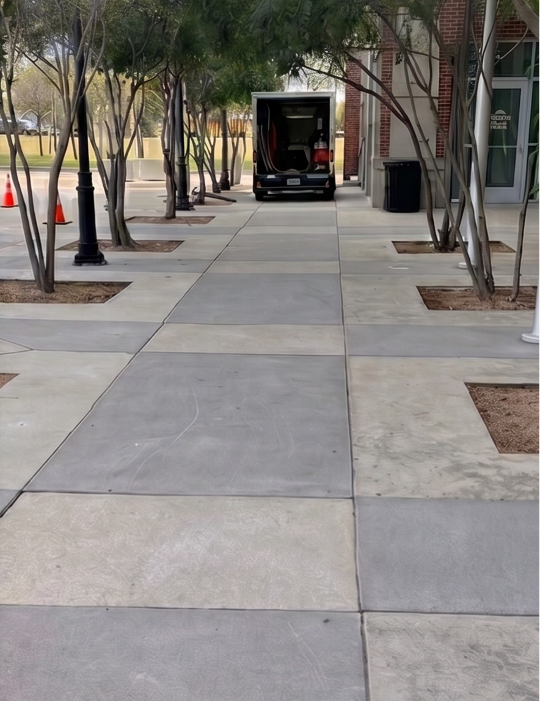

Sources & Supporting Evidence
Supporting references for KKE’s concrete lifting, void filling, trip-hazard reduction, and property asset preservation strategy.
1. AMBI-JACK 4.0 Tested Polyurethane Foam
- Density: 4.0–4.4 lb/ft³, ASTM D1622
- Compressive Strength: 70–80 psi, ASTM D1621
- Closed Cell Content: >85%, ASTM D1940
- Water Absorption: <0.02%, ASTM D570
- Strength Development: 90% within 30 minutes
2. Property Management Benefits
- • No demolition required
- • Minimal tenant disruption
- • Eliminates trip hazards
- • Restores drainage and slope
- • Extends concrete lifespan
3. ADA Compliance Support
ADA Section 303 addresses vertical changes in walking surfaces, supporting correction of uneven sidewalks and access routes.
ADA Standards4. Real Project Evidence

Before

After
See Concrete Lifting in Action
Real-time polyurethane injection with precision-controlled lifting.
Dial-Verified Precision
Real-time grade monitoring ensures controlled lift accuracy.